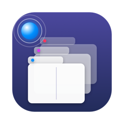

◎
The anchor sphere
A small sphere in the screen corner. Drop a window on it to anchor it; drop it again to set it free.

TabAppsTabApps for Mac
Drag any window onto the sphere and it becomes a tab. Add a browser, your editor, a terminal, anything. Then split, swap and switch with a keystroke.
macOS 14 or later · Apple silicon & Intel · Signed and notarized by Apple
This runs right here in your browser. Pick a chapter or let it play.
A small sphere in the screen corner. Drop a window on it to anchor it; drop it again to set it free.
Mix windows from different apps in one tab bar. Click a tab, or drop more windows onto the bar.
Hover a tab and split it left, right, top or bottom. A live preview shows where each window lands.
Drag a tab out and the real window follows your cursor. Drop it on another bar to move it.
⌥← ⌥→ to switch, ⌥1…9 to jump, ⌥⇧← ⌥⇧→ to reorder. Only while an anchored window is focused.
Windows move on spring curves at 60 fps. Tune speed and bounce, or turn animations off.
Glass, tinted with each anchor's colour, or System gray with iOS-style tabs that blend into the window.
Quit and reopen: your anchors, splits and tab order come back with the windows that are still open.
Sphere corner and size, bar style and height, hover delay, gaps, shortcuts, language. Over 40 settings.
Pick your own modifiers in Settings. Everywhere else, ⌥← still jumps a word.
Swift, AppKit and SwiftUI. No Electron, no web views. A few megabytes.
Event-driven: it reacts to window moves instead of polling your screen.
Accessibility, to move and arrange windows. It never reads what's inside them.
Optional anonymous counts, like “tab split”. No titles, no app names, no files. Off with one switch.
macOS only lets apps move, resize and focus other apps' windows through the Accessibility API. TabApps uses it for exactly that, and nothing inside your windows is read.
Any app with normal windows that macOS lets you move: browsers, editors, terminals, Finder, design tools. Full-screen windows and fixed-size panels can't be anchored.
No. TabApps only takes the shortcut when the focused window belongs to an anchor. You can also pick different modifiers.
TabApps puts the window back, but you can avoid the jump by turning off “Drag windows to screen edges to tile” in System Settings › Desktop & Dock, or by moving the sphere to another corner.
If you leave statistics on: anonymous event counts (for example “anchor created”), the app version and the macOS version, through TelemetryDeck. Never window titles, app names, files or anything personal.
Yes. TabApps is signed with an Apple Developer ID and notarized by Apple, so macOS checks it before it opens. Drag it to Applications and open it.
TabApps checks for new versions in the background and offers to install them. You can turn that off or check by hand in Settings › General.
A Mac with macOS 14 Sonoma or later, Apple silicon or Intel.
Updates arrive inside the app.